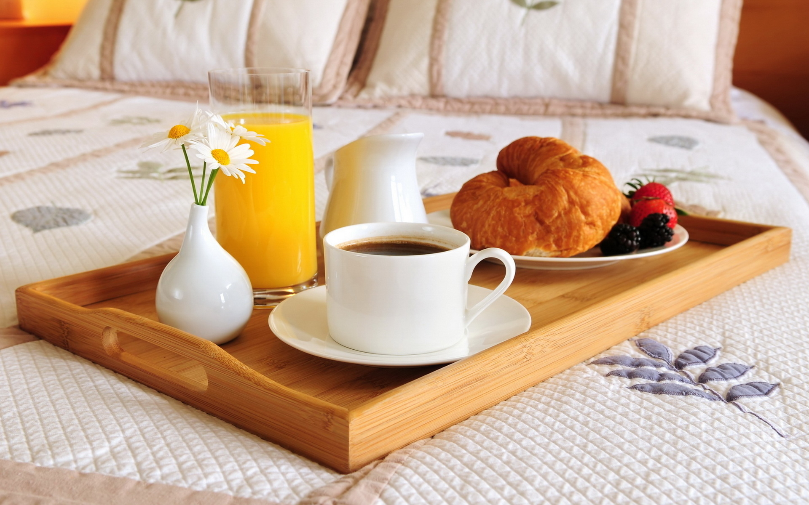
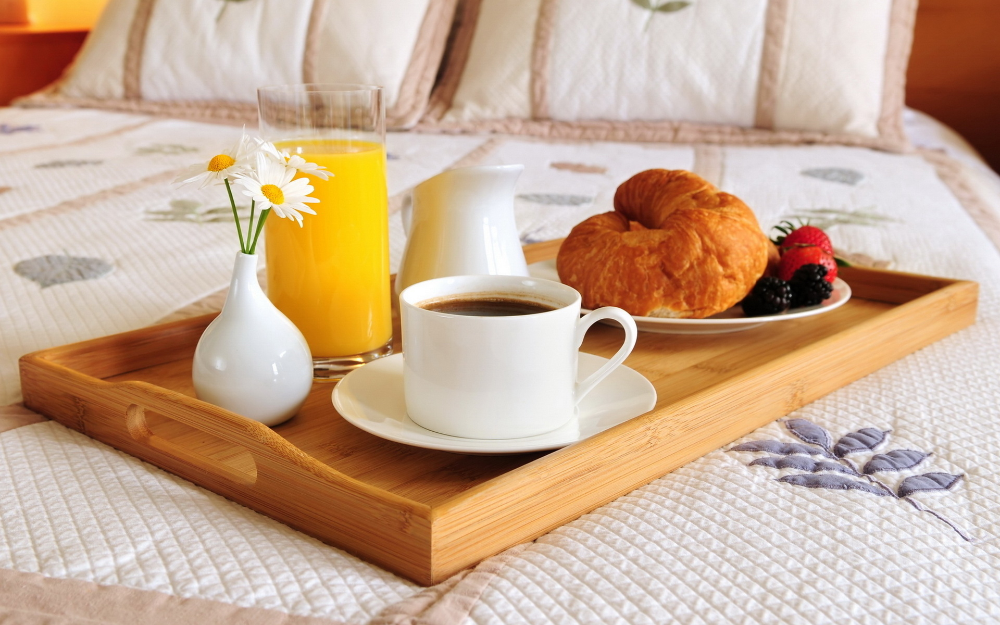

insert vector calendar here

Louise and Darrell Johnson, have prepared every detail to ensure that your vacation is a special event that you will long remember. Your experience starts with a spacious room, a large comfortable bed, and a spectacular gourmet breakfast. Buckeye Bed & Breakfast is nestled in the foothills of the Cambridge park with 11 forested acres, beautiful landscaping and stunning views.The house was built by Samuel Hannaford for Colonel Joseph Danner Taylor, an influential 19th century educator, attorney, business leader, and politician. Col. Taylor was influential in the development of Cambridge, Ohio and built a Queen Anne style mansion to reflect his status.
Spend an enchanted evening at the Colonel Taylor Inn Bed & Breakfast and a Romantic dinner for two! Guests are welcome to bring their favorite bottle of wine or other beverages.
insert vector calendar here
At Buckeye Bed and Breakfast, you will find yourself surrounded by rustic aesthetics and a homey atmosphere. When making a reservation with us, be sure to explore our 4 unique rooms to find what fits your vacation desires best.


 
